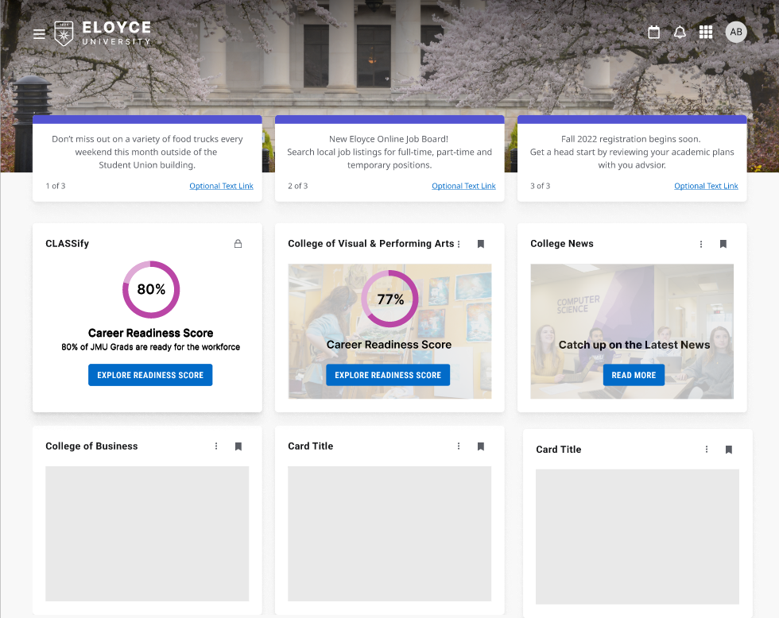
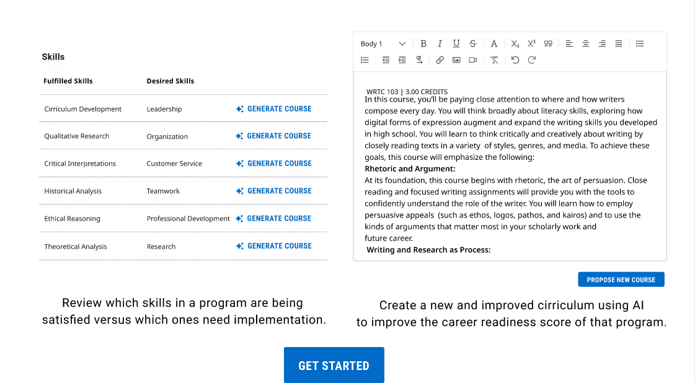

Classify
Prototype Web Application created as part of the JMU X-Labs Reimagined Internship Course, in partnership with Ellucian, to answer the question "How can institutions in Higher Ed better prepare students for their careers?"
As a Product Manager, I led the design and development of the prototype. In a team of 10 members, including two designers, two AI/ML developers, a back-end developer and a front-end developer,
my responsibility was to facilitate successful communication between the team.
Features include:


January–May 2024 | Product Manager | Figma Javascript React Latent Dirichlet allocation